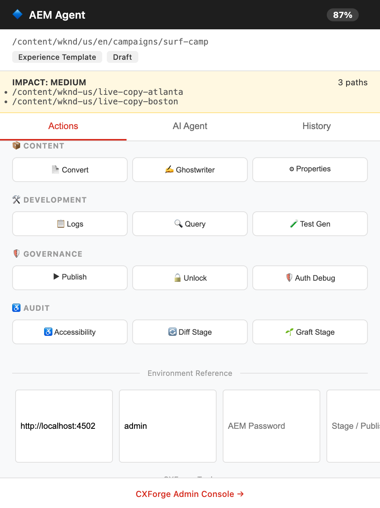

02 · Log Whisperer
Low-signal logs,
high-signal answers
✓
Live Sling error logs, fetched without leaving the browser
✓
Filters ERRORs, stack traces & resource-type matches
✓
Gemini Nano correlates errors to components automatically

Real side panel UI · sample log data simulated